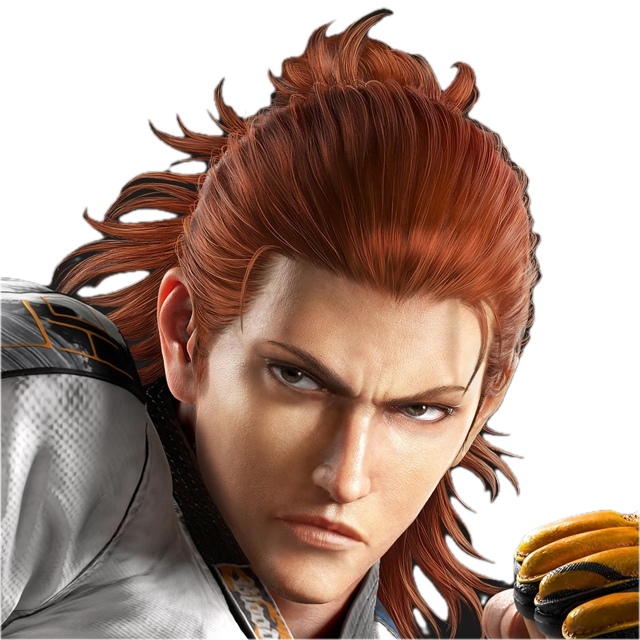

+ Kaikki hahmot P12Valmentajaprofiili
Ka-Fu
Hwoarang · k_fu
Replay
Hahmot
Hwoa päähahmo. Pystyn auttamaan kaikkien hahmojen kanssa vaihtelevalla kokemuksella.
Kokemus
7-vuotta treenaamista/turnauksia.
Erikoisosaaminen
Zen mental. Whiffpunit. Valtava tietämys tappelupeleistä, millä osaan rakentaa Tekkenistä uudellekkin pelaajalle lähestyttävän ja helpommin opittavan kokonaisuuden.
Valmennustyyli
Aspa työntekijän kärsivällisyys, sekä karhu emon tuki ja turva
Saatavuus
Yleisesti hyvin joustava. Saatavilla arkisin sekä vklp
Pelaajana
Hot & cold
Ota yhteyttä Discordissa
Ka-Fu/k_fu